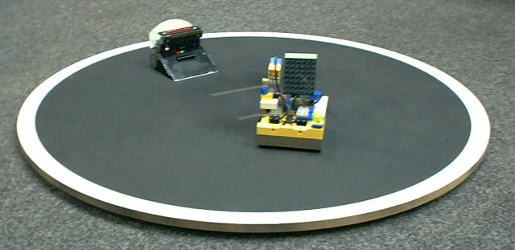
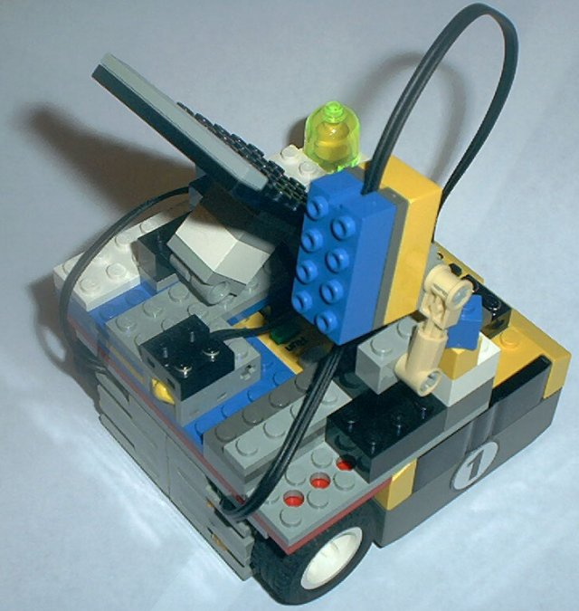
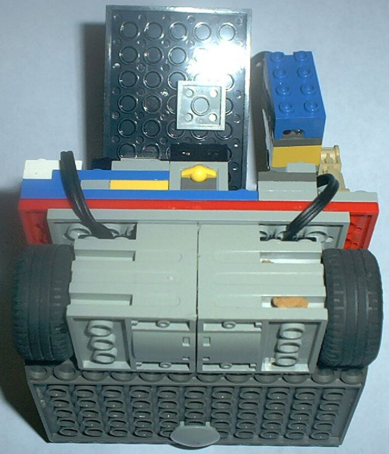
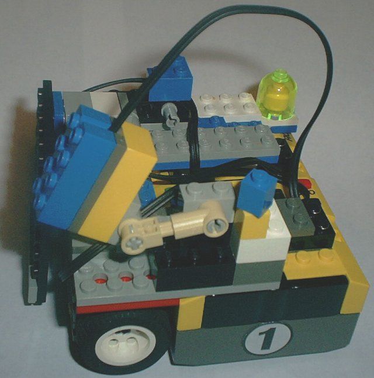

Joshua's Robots
In February, Joshua entered in a Mini Sumo Robot competition held here in Atlanta by the Atlanta Hobby Robot Club. We entered a bot built from Lego bricks, motors from Radio Shack, a custom motor control board, custom sensors, and a Microchip PIC controller.
We have since stayed active in the hobby robot club, and also acquired a Lego Mindstorms set. Joshua built a bot named Lemonade, and battled Delta Force at one of the club meetings.
You can find all sorts of Lego robotic info at the LEGO® MINDSTORMS(tm) Internals site.




Page created by The Karg Family
Photos Copyright (c) 2002 by The Karg Family